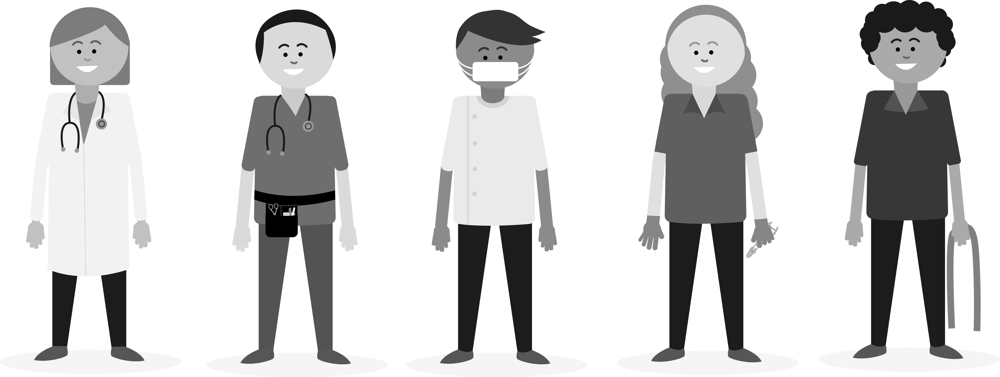

At times, you may identify certain personal support tasks that are not part of your role or skill set, or require you to work with equipment which you have not been trained to use. These and other advanced personal support tasks, should be performed by medical and other allied healthcare professionals.
